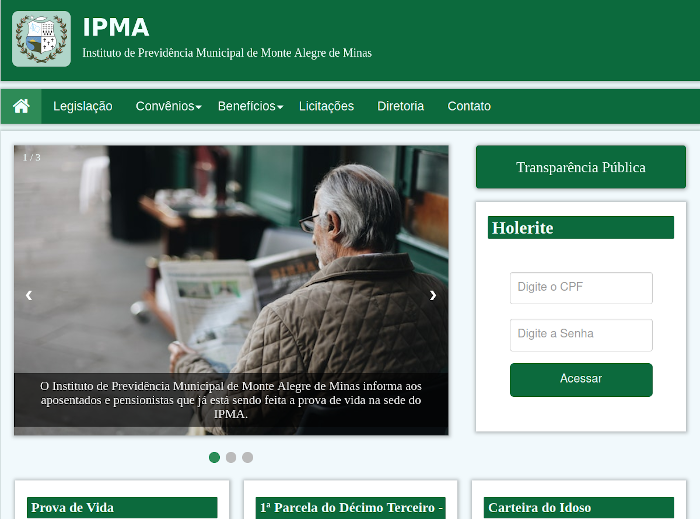
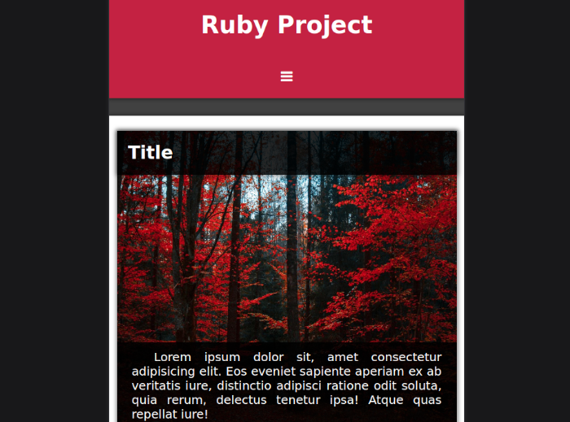
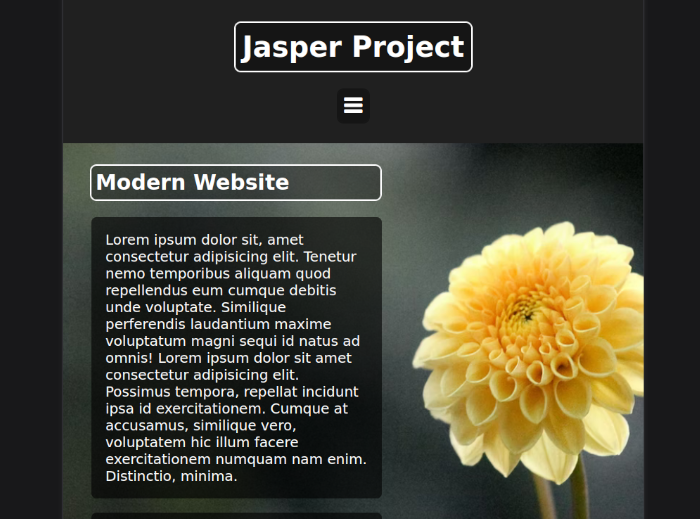
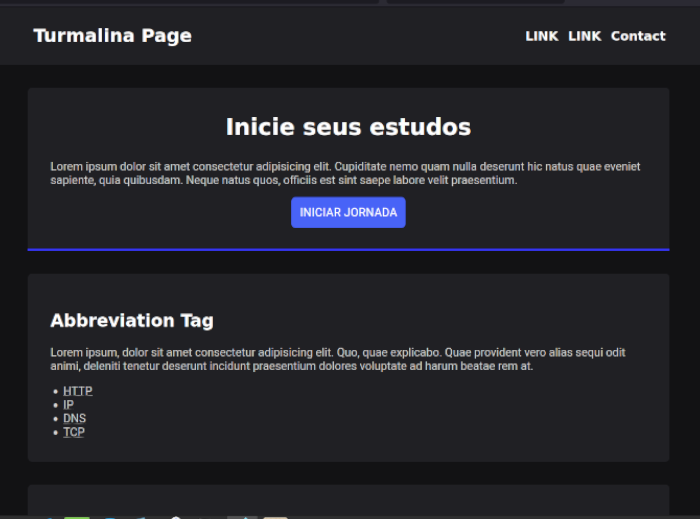

Meu Portfólio
IPMA

Meu primeiro projeto real, feito para o Instituto de Previdência de minha cidade. O site é todo responsivo, adaptável a qualquer formato de tela. Feito com HTML, CSS e Javascript.
Ruby Project

Este site é um dos meus projetos fictícios. Gostei muito de tê-lo feito, utilizei várias propriedades CSS de estilização, e.g., absolute position, flex, grid, @mediascreen, efeito parallax, etc.
Jasper Project

Meu primeiro site feito com efeito parallax. É um site simples, mas com diversas propriedades avançadas de CSS. Há nele um navigator para mobiles e PCs desktop.
Black Onyx

Este modelo de site, com a propriedade grid, contém três colunas de artigos que, sendo visíveis para PCs desktop e outras telas, se ajustam a duas ou uma coluna conforme o dispositivo mobile.
Turmalina

Um simples modelo de site, o qual tentei fazer "imitando" o modelo de site da rocketseat, do qual faço parte como estudante de programação.
Lapis Lazuli

Meu primeiro "projetinho", o qual tentei fazer com o maior carinho, apesar de ser apenas um modelo fictício. Aprendi muito sobre estruturação de sites com este primeiro projeto.